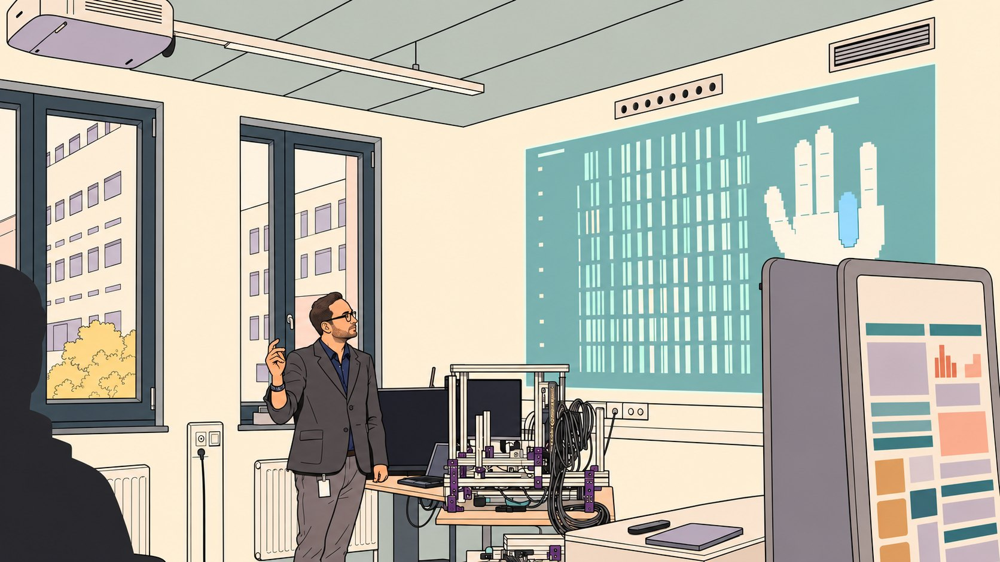
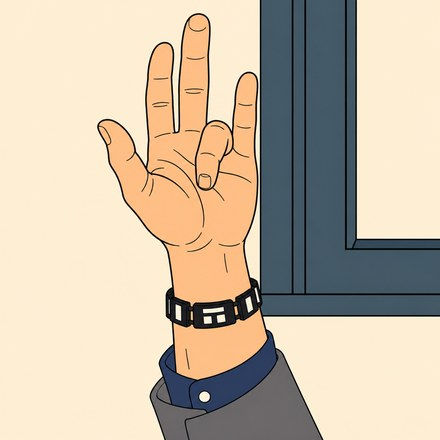
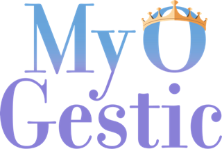
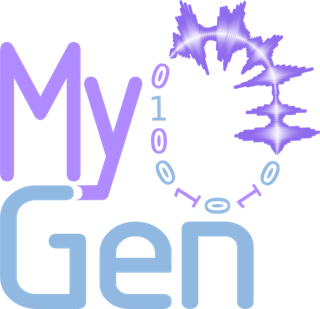

R. C. SîmpetruResearch Papers Software Tools Experience CVraulsimpetru.github.io ↗


n-squared lab · FAU · ErlangenNeural interfaces for hand control.
Hi, I’m Raul, a content creator for journals (PhD student)
I build neural interfaces that turn muscle activity into control of virtual hands, orthoses and prostheses.
Selected results
TNSRE · 2023
The whole hand, in real time
More than 20 degrees of freedom decoded live from forearm EMG, with under 50 ms latency.
TNSRE · 2024
Control after spinal cord injury
98.3% mean accuracy across 8 attempted movements in 8 tetraplegic participants.
Science Advances · 2025
Open software for assistive devices
With MyoGestic, 7 participants controlled a virtual hand, an orthosis, a prosthesis and a cursor.
Research software

Real-time myocontrol software with decoder calibration during participant sessions.
Co-creator and core developer

Biophysical simulation from neural drive to EMG.
Author and maintainer
Myo means muscle, which is where many of these tools begin: MyoGen, MyoGestic, and MyoVerse. But there is also a hidden my in there. I like to think that once you clone the code, adapt it, and build with it, the tool becomes yours too.
Drawing: a photo of the lab demo, redrawn with OpenAI Codex (gpt-6-astra)